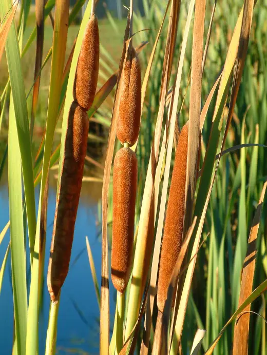

Raupō
Raupō is a sap or starch you can forage from November to January across New Zealand. Bulrush of swamps and lake edges with tall flat leaves and brown sausage-shaped seed heads.

When is raupō in season in New Zealand?
Raupō is usually in season November to January. Timing shifts with weather, latitude and altitude.
Where does raupō grow in New Zealand?
Raupō grows across New Zealand. Regions: Northland and Auckland, Central North Island, East Coast and Hawke's Bay, Wellington and Manawatū, Top of the South, West Coast, Canterbury, Otago and Southland.
How do you recognise raupō?
Bulrush of swamps and lake edges with tall flat leaves and brown sausage-shaped seed heads.
How do you harvest raupō?
Tap or collect only from healthy, mature trees, and only in the short season the sap runs. Remove taps afterwards so the tree can heal.
How do you eat raupō?
Golden pollen baked into pungapunga cakes; young shoots and peeled rhizomes cooked.
How do you store raupō?
Dry pollen.
What is raupō good for?
Calories.
What can you cook with raupō?
- Pungapunga (raupō pollen cake): Golden raupō pollen mixed with water and steamed or baked.